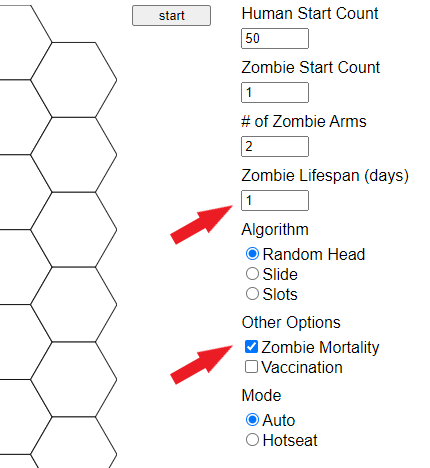

Learn the rules and assumptions for drawing compartmental diagrams
Connect compartmental diagrams with their corresponding systems of differential equations
Build understanding of units and rate parameters in models
In Chapter 2 we simulated a simple outbreak. This outbreak can be modeled using the system of ordinary differential equations appearing in (2.2) and (2.3). Here is the system again:
\begin{align*}
\frac{dS}{dt} \amp = -\beta S I \\
\frac{dI}{dt} \amp = \beta S I.
\end{align*}
This style of model is called a compartmental model because the individuals in our model are designated by categories called compartments; in this case, the compartments are “Susceptibles” and “Infectious”. In Chapter 2 we made calculus-based observations of the differential equations in this model. We can draw the dynamics of the model in a compartmental diagram, as shown in Figure 4.1.
Figure4.1.The compartmental diagram for one possible SI model, where “S”stands for “Susceptible” and “I” stands for “Infectious”
In this text, we regularly represent the dynamics of an outbreak using both compartmental model drawings and systems of differential equations. When we are careful in how we draw our compartmental diagrams, we can use these diagrams interchangeably with their corresponding systems of differential equations. In this chapter, we learn the vocabulary of compartmental models, as well as ways to draw compartmental diagrams so they clearly and completely represent the information contained in their corresponding systems of differential equations.
We begin in Exploration 4.1 by trying a different version of the human–zombie game. We then ask you to use the intuition you are building to think through how the compartmental diagram should look for this human–zombie game variation. After that, we discuss more details about compartmental diagrams. You are strongly encouraged to try to build your own compartmental diagram before moving on to the text’s discussion of the details.
once an individual becomes a zombie, they are always a zombie. This means that no one leaves the Infectious compartment.
Suppose, instead, that zombies do not last forever. Instead, after some number of days, the zombies die (again), or in other words, the zombies become inactive. The number of days they remain Infectious before becoming inactive can be stated in the app.
(a)
Before trying this scenario in the app, think through how zombie death, and different zombie lifespans, would change the outcomes of the simulation. In particular, think carefully about these questions:
What do you expect will happen if Zombies die, that is, they become inactive and unable to spread infection? Whether you feel very certain, or somewhat uncertain, articulate some outcomes that you think will occur with this game variation.
How might your expected outcomes differ from those in the original model?
Outcomes might be measured by the table of data, by the graphs, by the timing of how infection spreads, by the numbers of survivors, or in other ways. For each of your expectations about how the outcomes may change, what support can you show for why this expectation makes sense?
This exercise is not about right or wrong ideas, but instead is about building hypotheses, comparing the hypotheses with data, and developing deeper understanding of what the model shows.
(b)
After you have thought through how the outcomes will change in a variation, use the app to generate data.
To set up this variation in the Zombie Game app, check the box for “Zombie Mortality”, shown by the lower red arrow in Figure 4.2. A box then appears for “Zombie Lifespan (days)”, shown by the upper red arrow in Figure 4.2. Try setting Zombie Lifespan to 1, then 2, then 3. For each length of time, run several simulations, save your data sets, and compare the outcomes.

Screen image from the Zombie Game App, showing the checked box for “Zombie Mortality” and the “Zombie Lifespan (days)” that appears
Figure4.2.Checking the box for “Zombie Mortality” and setting a value for “Zombie Lifespan (days)”
(c)
Compare the results with the ideas you generated in part (a). How similar or different are the actual results, compared with what you thought?
(d)
What else do you observe? Consider how many humans or zombies survive till the end, and consider how much these numbers vary from simulation to simulation. Consider how many days the outbreak lasts. Make note of any additional observations you have, and reach out to other people trying this experiment to see how your results compare with theirs.
(e)
Before moving on to the next section, use your intuition to draw a possible compartmental diagram for the outbreak you just simulated in this Exploration. The only compartmental diagram we have seen so far is in Figure 4.1: use this diagram as an example, and make changes to match your simulation.
Section4.1Compartmental Diagrams: Vocabulary and Comments
In this section, we give a general description of compartmental diagrams. As you read, check in with the intuition you have been building: do these ideas fit with your understanding so far? Soon, in Section 4.2, we will connect these general ideas about compartmental diagrams with the specific model you constructed in Exploration 4.1.
A compartmental diagram is made up of boxes and arrows, each labeled to show what it represents. The boxes are called compartments and represent mutually distinct groups of individuals. The arrows indicate the possible ways that individuals can relocate from one compartment to another.
When we say “mutually distinct”, we mean that at any moment in time, an individual is in exactly one compartment: no more, no fewer. This means our entire population is fully accounted for at all times because everyone appears in some compartment. We also notice that we cannot double-count individuals, as they cannot be in more than one compartment at a time.
Because our models use continuous time and differential equations, we will sometimes compute non-integer values for the number of individuals in some compartments. We should think through this carefully. If, for instance, we find that at some time we have 13.6 Susceptibles and 36.4 Infectious, we are not saying that we have 13 Susceptibles, plus 36 Infectious, plus one individual who is split up to be 60% Susceptible and 40% Infectious. Instead, the differential equation model is telling us on average what happens, across many possible simulations or many possible outcomes. In computing an on average outcome, non-integer values are possible. If we wish to refer to actual numbers of people, we can round to the nearest integer, or use language that reflects the on average meaning of our model.
When we use a compartmental diagram, we should carefully define and describe all our terms. The definitions and descriptions may change in different models, so we should not assume that \(t\text{,}\)\(S\text{,}\)\(I\text{,}\) or other variables always have the same meaning. Time, \(t\text{,}\) may be measured in days, weeks, or some other unit, and we should indicate the unit. Here are possible descriptions for \(S\) and \(I\) based on the human–zombie game in Chapter 2: \(S\) stands for the Susceptible population, meaning people who do not have the zombie disease yet but could become ill with this disease, and \(I\) stands for the Infectious population, meaning individuals who are currently contagious and currently showing symptoms of the zombie disease. In other outbreaks, and therefore in other models, these descriptions may change. As just one example, \(I\) in a different model may refer to individuals who are Infectious in the sense that they are contagious, but they may or may not be showing symptoms. Modelers should fully state the specific definitions of \(S\text{,}\)\(I\text{,}\) or other populations, in their models.
The term \(\beta SI\) indicates flow from \(S\) to \(I\text{.}\) This term indicates that the flow depends on both the population \(S\) and the population \(I\text{.}\) When either population is very small, flow is relatively small. When both populations are relatively large, their product is large and therefore flow is relatively large. This sort of term is called a mass action term, from the Law of Mass Action in chemistry. The idea of mass action is just one way to model flow from one compartment to another; we will study other formulas for flow.
The letters \(S\text{,}\)\(I\text{,}\) and \(t\) are variables in the model. The Greek letter \(\beta\) is a parameter. We use the following conventions for letters in most of the models we study:
Time is denoted as the lowercase letter\(t\text{.}\)
We use capital letters such as \(S\) and \(I\) to indicate populations of people, which are typically functions of time, so that \(S=S(t)\text{,}\)\(I=I(t)\text{.}\)
Greek letters such as \(\beta\) represent some aspect of how a disease progresses and are called parameters.
A parameter may seem to behave a bit like a variable, since it can take on different values. However, parameters play a different role than variables in our models. In a given simulation, we use biological information to set all parameter values. By contrast, we choose only the initial values of our variables, that is, the values when \(t=0\text{,}\) and then the simulation reveals the values of each variable at later points in time. For instance, in the human–zombie example, we start at \(t=0\) with 49 humans and 1 zombie. Writing this in mathematical terms: \(S(0)=49\) and \(I(0)=1\text{.}\) After \(t=0\text{,}\) the populations of Susceptibles and Infectious depend on the outcome of the simulation. Even the length of time for the simulation depends on how long it takes the Infectious zombies to convert all the Susceptible humans.
As first mentioned in Chapter 2, the values of parameters and population variables can be positive, or sometimes \(0\text{,}\) but should never be negative. Variables referring to populations, such as \(S\) and \(I\text{,}\) indicate the number of people in a compartment, and therefore it does not make sense for them to be negative, as this would indicate a negative number of people. A variable referring to time should almost always be positive, as we typically think of a disease starting at time \(t=0\text{.}\) Parameters describe a variety of things, from the transmission parameter \(\beta\) we have seen, to parameters we will start learning about in Section 4.2 and Section 4.3 that relate to time spent in a compartment, to parameters indicating percentages, such as percentage of a population that is vaccinated. In all cases, only non-negative numbers are biologically meaningful. An advantage of positive parameters and variables is that we see in our model whether a term is positive or negative in an equation: if we see a negative sign, the term is negative; otherwise, that term is positive. This is in contrast to more general mathematical equations in other applications: mathematical epidemiology makes positives and negatives completely apparent.
Section4.2From Zombie Game Variation to Compartmental Diagram
The Zombie Game variation in Exploration 4.1 introduces a new category of individuals, beyond Susceptibles and Infectious. This new category corresponds to a new compartment, compared with Figure 4.1, in the model’s compartmental diagram.
When zombies die, they leave the Infectious compartment and can no longer infect the Susceptibles. It is typical to represent these dynamics by introducing a Removed (R) compartment for the individuals who were zombies but have then become inactive. Our model then includes S, I, and R compartments, so we call it an SIR model. 2
We typically say each of the letters in SIR when naming this model aloud. That is, we refer to the “S” “I” “R” model, not the “sir” model.
A compartmental diagram representing the dynamics of this SIR model appears in Figure 4.3.
Figure4.3.One possible \(SIR\) (Susceptible, Infectious, Removed) compartmental diagram
In this diagram, we include the S and I compartments used previously, while also allowing the Infectious zombies to leave the I compartment and enter the R compartment, where they stay for the rest of the simulation. The mathematical formula for movement from I to R is \(\gamma I\text{.}\) The parameter \(\gamma\) (the Greek letter gamma) represents the rate at which individuals leave \(I\) and enter \(R\text{.}\) Larger values of \(\gamma\text{,}\) for instance, mean that zombies become inactive more rapidly than with smaller values of \(\gamma\text{.}\) This formula indicates that neither Susceptibles nor Removed individuals influence movement from I to R: instead, only the number of Infectious people, and a rate based on how long they remain zombies, determine this movement between compartments.
Activity4.2.
Take time to think through the compartmental diagram in Figure 4.3.
Does Figure 4.3 match your sense of how individuals progress through the simulation? Are all individuals always in exactly one compartment, that is, in at least one compartment and also no more than one compartment at any given time?
Using the information in the compartmental diagram, write the differential equations for this SIR model.
Hint.
Have you considered whether all individuals must pass through all three compartments?
We saw in Section 2.2 that the term named on an arrow appears twice in the differential equations: once as a negative term, in the equation for the compartment the arrow is exiting, and once as a positive term, in the equation for the compartment the arrow is entering.
Answer.
It should be true that individuals are in exactly one compartment at a time, but with all claims such as this, you should convince yourself or else ask questions about it. It should also be true that individuals cannot progress in any order other than what the compartmental diagram shows. However, in some simulations, some individuals may not leave compartment S. By contrast, with Exploration 2.1 and the SI model, all individuals progress from the S compartment to the I compartment.
The differential equations for this SIR model are:
\begin{align*}
\frac{dS}{dt} \amp = -\beta S I \\
\frac{dI}{dt} \amp = \beta S I - \gamma I \\
\frac{dR}{dt} \amp = \gamma I.
\end{align*}
Section4.3Estimating Gamma and Other Rates
Consider an SIR model as represented in Figure 4.3. Let us think about what the values of \(\gamma\) should be.
Activity4.3.
What would it mean if \(\gamma =1\text{,}\)\(\gamma =0.5\text{,}\) or \(\gamma =0.25\text{?}\) Specifically: what fraction of the members of the I compartment leaves I within one unit of time for each of these values of \(\gamma\text{?}\) For instance, if the unit of time in the SIR model is days, then what fraction of the members of the I compartment leaves I within one day? Similarly, what percentage of the members of the I compartment leaves I within one unit of time for each value of \(\gamma\text{?}\)
Answer.
If \(\gamma =1\text{,}\) then all members of compartment I, that is, \(100\%\) of the members, leave I at each unit of time. If \(\gamma =0.5\text{,}\) then half the members, that is, \(50\%\text{,}\) leave I at each unit of time. And if \(\gamma =0.25\text{,}\) then one-quarter of the members, that is, \(25\%\text{,}\) leave I at each unit of time.
Activity4.4.
Using what you learned in Activity 4.3, think further about \(\gamma =1\text{,}\)\(\gamma =0.5\text{,}\) or \(\gamma =0.25\text{.}\) For each of these values of \(\gamma\text{,}\) how long does a typical individual remain in compartment I before leaving for compartment R?
Answer.
If \(\gamma =1\text{,}\) then all members of compartment I leave at each unit of time, so a typical individual stays in I for one unit of time. If \(\gamma =0.5\text{,}\) then half the members of I leave at each unit of time, so a typical individual stays in I for approximately two units of time. And if \(\gamma =0.25\text{,}\) then one-quarter of the members of I leave at each unit of time, so a typical individual stays in I for approximately four units of time.
We begin to see in Activity 4.4 that we can understand \(\gamma\) intuitively in relationship to how long an individual is in the I compartment. A compartmental model does not track individuals directly, and the responses in Activity 4.4 do not suggest that every individual in an outbreak is sick for a precise amount of time that is shown by \(\gamma\text{.}\) Instead, the relationship between \(\gamma\) and length of time in compartment I shows how long on average individuals stay in compartment I. We can write this relationship mathematically:
\begin{align}
\frac{1}{\gamma} \amp \approx \mbox{average length of time an individual spends in compartment I.} \tag{4.1}
\end{align}
Another way to phrase this, when being in the I compartment corresponds to a person being infectious (however “infectious” is defined in a given model) is:
\begin{align}
\frac{1}{\gamma} \amp \approx \mbox{average length of time an individual is infectious.} \tag{4.2}
\end{align}
Notice that \(1/\gamma\) is an amount of time. This means that the units of \(\gamma\) are \(1/\mbox{time}\text{.}\) This observation corresponds with \(\gamma\) being a rate.
Many, but not all, of the parameters in the models in this text are rates. Usually, when a parameter in a compartmental model is a rate, we can estimate its value in a similar way to how we estimate \(\gamma\) in (4.1).
In particular, notice that \(\beta\) in our model can not be a rate. We see this when we recognize that each term in a model equation must have the same units: otherwise, we cannot set terms equal to each other, or add or subtract terms. Explore how this works in Activity 4.5.
Activity4.5.
In Activity 4.2, we developed the following system of differential equations for the SIR model shown in Figure 4.3:
\begin{align}
\frac{dS}{dt} \amp = -\beta S I \tag{4.3}\\
\frac{dI}{dt} \amp = \beta S I - \gamma I \tag{4.4}\\
\frac{dR}{dt} \amp = \gamma I. \tag{4.5}
\end{align}
Recall that each of the variables \(S\text{,}\)\(I\text{,}\) and \(R\) represents some average number of individuals. This means that the units for each of \(S\text{,}\)\(I\text{,}\) and \(R\) are population. 3
Alternatively, we could call these units people or individuals.
We also just saw from the discussion of (4.1) that the units of \(\gamma\) are \(1/\mbox{time}\text{.}\)
Consider the equation \(\frac{dR}{dt} = \gamma I\) from the SIR model. What are the units of the term \(\frac{dR}{dt}\) on the left-hand side, and what are the units of the term \(\gamma I\) on the right-hand side? Can you confirm that these two terms have the same units?
Next, consider the equation \(\frac{dI}{dt} = \beta S I - \gamma I\) from the SIR model. Start by using the first part of this activity to determine the units of \(\frac{dI}{dt}\) and \(\gamma I\text{.}\) Next, in order for the units to be the same for all three terms, what should the units be for \(\beta S I\text{?}\) Finally, knowing the units of \(\beta S I\text{,}\) what must be the units for \(\beta\text{?}\)
Use your results from the first two parts of this activity to confirm that the units are the same on both sides of the equation \(\frac{dS}{dt} = -\beta S I\) in the SIR model.
Answer.
The term \(\frac{dR}{dt}\) has units \(\mbox{(population)} / \mbox{(time)}\) because the units of \(R\) in the numerator are population and the units of \(t\) in the denominator are time.
The term \(\gamma I\) has units \(\mbox{(population)} / \mbox{(time)}\) because \(\gamma\) has units \(1/\mbox{time}\) and \(I\) has units (population).
Both sides have the same units, namely \(\mbox{(population)} / \mbox{(time)}\text{.}\)
The terms \(\frac{dI}{dt}\) and \(\gamma I\) have units \(\mbox{(population)} / \mbox{(time)}\text{,}\) for similar reasons to those described in the first part of this activity.
The term \(\beta S I\) should therefore also have units \(\mbox{(population)} / \mbox{(time)}\text{.}\) Since there are two populations, \(S\) and \(I\text{,}\) multiplied in the numerator, this means that \(\beta\) must have units \(1/(\mbox{population} \cdot \mbox{time})\text{.}\)
The term \(\frac{dS}{dt}\) has units \(\mbox{(population)} / \mbox{(time)}\text{,}\) for similar reasons to those described in the first part of this activity.
Within the term \(-\beta S I\text{,}\) we saw in the second part of this activity that \(\beta\) has units \(1/(\mbox{population} \cdot \mbox{time})\text{.}\) Both \(S\) and \(I\) have units (population). Multiplying together the three terms \(\beta\text{,}\)\(S\text{,}\) and \(I\text{,}\) the resulting units are \(\mbox{(population)} / \mbox{(time)}\text{.}\)
These observations confirm that the units are the same on both sides of the equation \(\frac{dS}{dt} = -\beta S I\text{.}\)
After completing Activity 4.5, we recognize that in our SIR model, the units of \(\beta\) are not \(1/\mbox{time}\text{.}\) Therefore \(\beta\) is not a rate, and we cannot estimate the value of \(\beta\) similarly to how we estimate the value of \(\gamma\text{.}\) Indeed, estimating the value of \(\beta\) will require different methods. In Chapter 3 we discuss estimating \(\beta\) visually by comparing our model with data. In Chapter 5 and Chapter 6 we introduce another way to estimate \(\beta\text{,}\) using other parameter values we know, along with a formula involving an epidemiological concept known as the basic reproduction number.
For Further Thought4.4For Further Thought
1.
Use the ideas and website suggestions of Chapter 1 to determine how long individuals are infectious with measles, in the sense used for our SIR model, where “infectious” signifies “contagious”. Cite your source(s). 4
Include links to any web pages, the title of each web page used, the name of the government agency or other publisher of each web page, and the date you most recently accessed the web page.
Then suppose you are creating an SIR model for the spread of measles. What value would you use for \(\gamma\text{?}\) Explain your reasoning.
from Chapter 1. What are the similarities, and the differences, between how the CDC and People magazine describe how long measles is infectious (where here, “infectious” means “contagious”)?
3.
Use the ideas and website suggestions of Chapter 1 to determine how long individuals are infectious (here, meaning “contagious”) with RSV. Cite your source(s). 6
Include links to any web pages, the title of each web page used, the name of the government agency or other publisher of each web page, and the date you most recently accessed the web page.
Then suppose you are creating an SIR model for the spread of RSV. What value would you use for \(\gamma\text{?}\) Explain your reasoning.